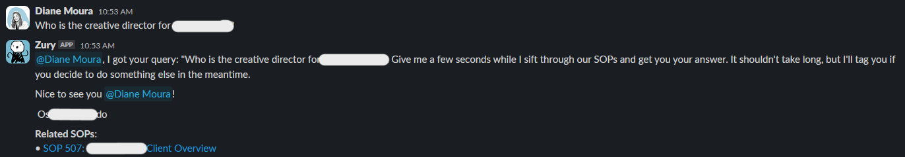
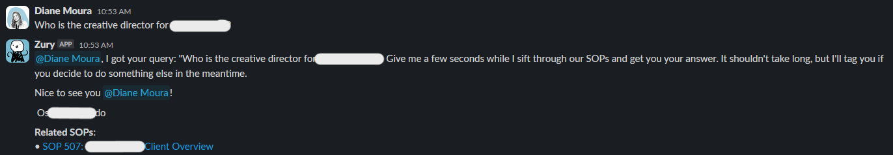
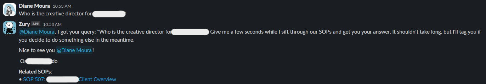

Gallery

 

🢠Organizations -> ZenChange Marketing -> Zury
January 2024
Meet Zury, the executive marketing assistant on Slack at ZenChange Marketing. Zury revolutionizes communication by seamlessly handling queries from employees. Equipped with the ability to dynamically scan a Google Drive folder, Zury stays on top of shared folder changes, retrieving pertinent documents. What sets Zury apart is its integration with the LangChain library, enabling it to generate intelligent and contextually relevant responses to employee inquiries. This innovative assistant not only streamlines communication but also empowers the team with swift and informed answers, enhancing efficiency across the organization.
Through LangChain, Zury refines responses based solely on the information available in the provided documents. This unique approach ensures that Zury's communication is grounded in the most relevant and up-to-date data, providing the ZenChange Marketing team with precise and informed answers, all while optimizing efficiency in their day-to-day operations.
With this capability, Zury dynamically checks for changes in the shared folder, ensuring that the team stays seamlessly connected to the latest information. This integration not only keeps everyone in the loop but also reinforces Zury's commitment to providing up-to-the-minute and relevant data, elevating communication and collaboration within the ZenChange Marketing team.
Achieves around-the-clock conversation excellence by being hosted on Amazon EC2. This strategic hosting choice allows Zury to operate continuously, transcending time zones and accommodating employees situated across the globe. Whether it's day or night, Zury remains readily available on the EC2 infrastructure, ensuring consistent and timely assistance, and fostering seamless communication for the diverse and global ZenChange Marketing team.
My key focus was on maintaining a seamless communication channel with my client. This involved diligent collaboration to ensure all desired features were meticulously incorporated into the application. My commitment extended beyond the development phase—I remained vigilant during testing and production, swiftly addressing any bugs that surfaced. This continuous feedback loop ensured Zury's evolution aligned precisely with my client's vision, culminating in a reliable and feature-rich solution.
